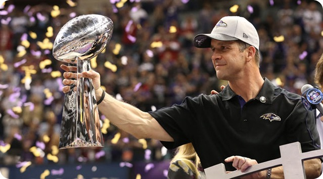

The Baltimore Ravens became an official team of the NFL in 1996. Before the Ravens, Baltimore was home to the Baltimore Colts from 1953 until the team relocated to Indianapolis in 1984.
While in Baltimore, the Colts won three championships in 1958, 1959, and 1968. The Colts departure from Baltimore was unlike any other. On March 28, 1984, the Baltimore Colts picked up and left Baltimore in the middle of the night, taking all their players and coaches to Indianapolis via the team’s buses.
The citizens of Baltimore were extremely disappointed until 1996 when Art Modell took his Cleveland Browns from Cleveland to Baltimore, rebranding the team as the Ravens. Since then, the Ravens have won two Super Bowls — one in 2000 and another in 2012.
The 2000 Ravens relied strongly on their defense to defeat the New York Giants in the Super Bowl, allowing only 7 points with a final score of 34-7. The Ravens then went 12 years before reaching another Super Bowl in which they defeated the San Francisco 49ers in a much closer battle with a final score of 34-31.
In recent years the Baltimore Ravens have been a dominant team in the NFL reaching the AFC Championship once and the playoffs for three consecutive years. On the offensive side, Lamar Jackson is the starting QB and has been with the Ravens since he was drafted 32nd overall in 2018 from the University of Louisville. He is accompanied by five-time Pro Bowler Derrick Henry and recent first round draft pick Zay Flowers.
The Ravens offense led the NFL in offensive efficiency this year and looks to improve during the offseason addressing needs at the guard and tackle positions.
On the defensive side of the ball, the Ravens have a lot of talent. Leading the defense is three-time Pro Bowler Roquan Smith, acquired via trade with the Chicago Bears in 2022. Other key players include safety Kyle Hamilton, Marlon Humphrey, and rookie Nate Wiggins. With new defensive coordinator Zachary Orr, the team looks to improve their defense this offseason by adding depth at cornerback and edge.
Ravens Super Bowl XLVII Victory
